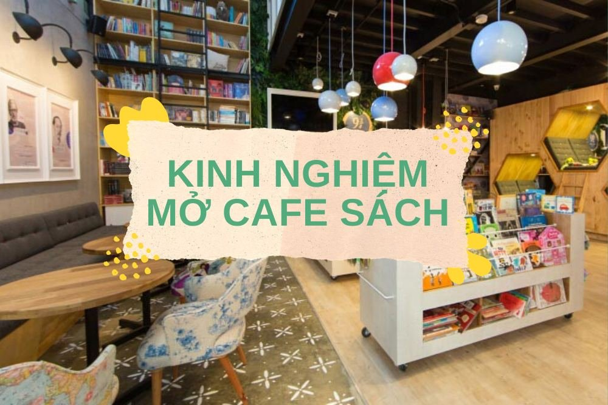

Mô hình kinh doanh cà phê sách-"Lạ" nhưng không "Mới"
Một quyển sách và một tách cà phê luôn là sự kết hợp hoàn hảo để tận hưởng những phút giây thư giãn trong cơn đô thị ồn ào. Chính vì thế,
mô hình kinh doanh cà phê sách đang dần trở thành xu hướng phổ biến. Thay vì vội vã bước chân ra ngoài phố phường, hãy dành chút thời gian đắm chìm trong không gian sách và hương vị cà phê thơm ngon để tìm lại cảm giác bình yên trong tâm hồn.
Nhằm nâng cao khả năng quản lý và phục vụ, Depresso đã cho ra mắt phần mềm quản lý cafe với các tính năng hiện đại tích hợp cho quán cafe sách chắc chắn sẽ phù hợp với các chủ doanh nghiệp có đam mê mở cafe sách.

Bình quân một người Việt Nam đọc 2.8 quyển sách một năm và 7.07 tờ báo một ngày. VÀ không lạ gì khi con số này là cực kì thấp so với các quốc gia khác trên thế giới và ngay cả khi so sánh với các quốc gia châu Á, chúng ta cũng phải ngả mũ chào thua. Pháp, Nhật Bản, Israel có con số lên tới 20 và các quốc gia trong khu vực như Singapore là 14, Malaysia là 10.
Khác với vấn nạn mù chữ mà người Việt Nam phải đối mặt trong những năm 1945, hiện tại thế hệ người Việt Nam bây giờ, đặc biệt là giới trẻ đang mắc một chứng bệnh con nguy hiểm hơn đó là “vô cảm” - thiếu đi những suy nghĩ đồng cảm giữa con người với nhau, thiếu những kiến thức cơ bản để vực dậy bản thân trước những sóng gió đầu đời.
Đam mê đọc sách có thể trở thành một nguồn thúc đẩy lớn hướng bạn đi tới con đường đúng đắn. Còn hơn thế nữa, bạn có thể truyền cảm hứng của chính mình cho những người khác. Đọc sách khiến con người sống chậm lại, suy nghĩ nhiều hơn về những người xung quanh.
Từ những câu chuyện cay đắng từ cuộc đời của các tác giả, nhân vật mà họ cảm thấy trân trọng những điều đơn giản và nhỏ nhặt. Nối kết mọi người đến gần với nhau hơn thông qua những trang sách, bạn đã góp phần rất nhiều vào công cuộc xây dựng một xã hội văn minh, tạo tiền đề cho sự phát triển của các thế hệ tương lai sau này.
Ảnh minh hoạ
Sự xuất hiện của mô hình cà phê sách trong khoảng chục năm trở lại đây đã trở thành một trào lưu tao nhã, khắc đậm cá tính của những cá nhân yêu thích đọc sách.
Cà phê sách không những là điểm hẹn lý tưởng để gặp gỡ bạn bè, đối tác, đồng nghiệp những quán cà phê còn là địa điểm cho những người yêu sự yên tĩnh, thoải mái. Nhâm nhi một tách cà phê thơm mát, lắc lư theo một bài hát yêu thích và thả mình vào từng dòng chữ trên trang sách ,... Thật tao nhã làm sao!!!
Bạn có niềm đam mê đọc sách? Bạn ấp ủ ý tưởng mở quán cà phê sách, nơi những người “ghiền” sách giống bạn có thể thưởng thức những ly cà phê thơm ngon, đồng thời được đắm mình trong một không gian yên tĩnh tuyệt đối để được “phiêu” cùng những cuốn sách hay? Nhưng bạn băn khoản không biết bắt đầu từ đâu và làm thế nào? Làm sao để bạn tạo được nét riêng, sự độc đáo và cuốn hút cho quán cafe sách của riêng mình?
Tất cả những gì bạn cần là đam mê và sự quyết tâm. Còn tất cả những bí quyết kinh doanh mở quán cà phê sách của bạn đã có chúng tôi giải đáp cho bạn. Hãy giữ riêng cho bản thân những bí mật sau và vận dụng chúng một cách hợp lý. Chắc chắn mơ ước của bạn sẽ trở thành hiện thực.
1/Khách hàng mà bạn hướng đến là ai ?
Với sản phẩm dịch vụ bạn mang lại là một không gian yên tĩnh và một kho tàng sách nên tất nhiên phân khúc khách hàng bạn đang hướng tới là doanh nhân, trí thức, những người sành cà phê, nghiền sách và yêu thích sự yên tĩnh. Học sinh, sinh viên cũng là một trong những khách hàng tiềm năng mà bạn không nên bỏ lỡ.
2/ Địa điểm thích hợp nhất để những “thượng đế” lui tới là những đâu?
Trình tự sắp xếp các ý trong bài viết này không phải là không có chủ ý. Tôi cố ý sắp xếp chúng theo thứ tự để bạn đọc có một cách nhìn hệ thống về cửa hàng cà phê sách mình sẽ kinh doanh trong tương lai.
Như thế, bạn sẽ tránh được những khoản chi phí thiệt hại do xác định sai các yếu tố quan trọng. Tất cả đều xâu chuỗi liên quan đến nhau và có từng mức độ quan trọng khác nhau. Tiếp tục cuộc hành trình nhé!
Ảnh minh hoạ
Sau khi xác đinh được phân khúc khách hàng, bạn hãy vẽ ra một kế hoạch cụ thể cho việc lựa chọn địa điểm kinh doanh. Có rất nhiều rủi ro đang rình rập bạn ngay từ những ngày bắt đầu mới kinh doanh.
Và rất nhiều người vấp ngã ngay tại bước thứ 2 này. Dưới đây là những nguyên nhân chủ yếu dẫn đến thất bại kinh doanh khi lựa chọn địa điểm đặt quán:
- Thiếu diện tích để xe.
- Nằm xa các cơ quan, công ty hay các địa điểm vui chơi, khu dân cư – nơi làm việc của các khách hàng tiềm năng. Cho dù quán cafe của bạn có đồ uống ngon đến thế nào chăng nữa, không gian có đẹp đi thế nào chăng nữa thì thật sự vị trí xa xôi của quán là khó khăn lớn cho những khách của bạn.
Phần lớn khách hàng đến quán cà phê với mục đích thư giãn buổi sáng, buổi trưa trước khi bắt tay vào một ca làm mới hay ghé vào quán sau một buổi đi chơi vui vẻ và cần không gian yên tĩnh để tâm sự hay đọc sách theo sở thích. Từ đó, khi tự đặt bản thân mình cào vị trí của họ bạn có thể nghiệm ra lý do vì sao bạn không ghé Coffe shop đó vào quán mặc dù ở đó có đồ uống ngon, không gian đẹp. Bạn là dân văn phòng không mua đi quá xa để có một cốc cà phê vừa miệng hay ngồi thư giãn xua tan căng thẳng công việc. Trên đường đi chơi về, bạn muốn ghé một quán cà phê gần nhà để tâm sự thay vì cất công đi đến một quán xa xôi vì cơ bạn đã cạn năng lượng sau một chuyến hành trình dài. Từ những ví dụ trên, chắc bạn đã hiểu ý mà tôi đang nói đến rồi đúng không nào? Thêm vào đó, nếu book coffee shop của bạn chỉ gần các cơ quan hay trường đại học, xa tời khu dân cư và các địa điểm vui chơi thì rất có thể quán sẽ đông khách ngày thường và vắng bóng những ngày cuối tuần hoặc ngày lễ. Điều này gây không ít khó dễ cho bạn trong việc bố trí nhân sự và ảnh hưởng khá nhiều đến lợi nhuận thu được.
- Thiếu ánh sáng tự nhiên – luôn bật đèn 24/24 vừa tiêu tốn nhiều tiền của, vừa gây ra cảm giác choáng ngợp, không tốt cho mắt đặc biệt là ảnh hưởng đến các khách hàng lui tới đọc sách hay làm việc trên laptop.
- Giá thuê mặt bằng quá cao – đối với mô hình kinh doanh này, luôn ưu tiên sự yên tĩnh nên việc tiết kiệm chi phí khi thuê mặt bằng nằm trong ngõ một chút là lựa chọn khá phù hợp, vừa giảm thiểu doanh thu vừa đạt được tiêu chí cân thiết. Thêm vào đó, hãy đảm bảo là bạn có thể kinh doanh dài hạn tại địa điểm đã thuê. Lượng chi phí phát sinh thêm khi chuyển địa điểm và công sức để tìm mặt bằng mới khi chủ thuê chấm dứt hợp đồng là rất lớn, vì thế bạn nên làm rõ những mong muốn của mình và có điều khoản bồi thường nếu đơn phương chấm dứt trong hợp đồng để giảm thiểu rủi ro vừa nêu trên. “Giấy trắng mực đen luôn tốt hơn là những cam kết bằng miệng.”
3/ Lên kế hoạch mở quán cà phê sách
Nghiên cứu thị trường:
Cà phê Trung Nguyên được mọi người yêu thích
Như đã giải thích ở mục trước, “thượng đế” của bạn là rất nhiều người, nhưng bạn phải hiểu được đâu là khách hàng mục tiêu – khách hàng chắc chắn sẽ ghé quán của bạn vì họ là những người yêu thích mô hình này.
Bạn có thể kinh doanh tốt hay không, một phần là nhờ họ, chính vì vậy mọi vấn đề trong kinh doanh bạn nên hướng đến đều tập trung vào những khách hàng này. Làm sao để bạn có thể biết được khách hàng mục tiêu của bạn ở đâu, là ai?
Hãy thử dành ra một ít thời gian nghiên cứu, đi tham khảo thực tế từ nhiều nơi có mô hình kinh doanh cà phê sách để quan sát, bạn sẽ có cho mình nhiều hơn một câu trả lời rồi đấy.
Nhưng có một nhóm khách hàng khác cũng sẽ nằm trong khu vực cần bạn chú ý và quan tâm đó là nhóm khách hàng mục tiêu. Khách hàng mục tiêu là những người có thể sẽ đến với quán cà phê của bạn với bất kỳ một lý do vô tình nào đó hoặc do chịu sự tác động bởi một ai đó.
Đây cũng là một nguồn doanh thu hấp dẫn và lý tưởng cho bạn, hãy thật cẩn thận khi phân chia hai nhóm khách hàng này để có thể lập cho mình những mục tiêu truyền thông thích hợp vào từng nhóm đối tượng. Một khi bạn đã thật sự chắc chắn và hiểu rõ khách hàng của bạn là ai, tôi tin rằng bạn sẽ tăng doanh thu đến chóng mặt.
Vị trí kinh doanh cũng đã được giới thiệu ở mục trước, bạn hãy nhớ đọc lại thật kĩ nhé. Nhưng có một vấn đề tôi vẫn muốn lưu ý với bạn rằng địa điểm lựa chọn kinh doanh của bạn tránh với việc địa chỉ quá khó tìm hay vị trí quá phức tạp để đến (khách hàng sẽ phải quẹo qua quá nhiều con hẻm hay khúc quanh khiến họ bối rối) chính là điểm trừ đấy. Hãy thật “an cư” rồi bạn sẽ có thể “lập nghiệp”
Và cuối cùng là vấn đề bạn không thể bỏ qua: ĐỐI THỦ CẠNH TRANH của bạn đang là ai? Cũng giống như khách hàng vậy, bạn cũng cần phải quan tâm và để ý đến đối thủ của bạn nhiều hơn. Có những loại đối thủ nào bạn cần chú tâm đến?
Đó là đối thủ cạnh tranh trực tiếp với bạn ( những quán có hình thức và quy mô giống với quy mô mà bạn đang hướng đến) và đối thủ cạnh tranh gián tiếp (những đối thủ này tuy không có hình thức kinh doanh giống quán của bạn hay thậm chí hình thức kinh doanh cơ bản là cà phê nhưng họ cũng chẳng giống, tuy nhiên bạn đừng vì vậy mà lơ là hay không quan tâm đến họ nhé, vì có thể trong tương lai họ sẽ trở thành đối thủ trực tiếp với bạn đấy.)
4/ Nguyên liệu pha chế sản phẩm
Tất nhiên bạn hiểu rõ tầm quan trọng của chất lượng nguyên liệu – đầu vào quan trọng quyết định yếu tố chất lượng sản phẩm là cà phê của quán.
Lựa chọn nơi cung cấp cà phê uy tín bạn sẽ không phải đau đầu khi chất lượng không định hay giá cả biết động quá mức
Điều quan trọng bạn nên trang bị cho chính bản thân mình là kiến thức về nguyên liệu và ở đây chúng ta đang nói đến là cà phê. Không chỉ kể đến việc cà phê có rất nhiều loại nhưng cùng một lạo dựa vào cách rang xay khác nhau lại cho ra những loại cà phê khác nhau.
Hãy dẹp bỏ ý tưởng “ngồi rung đùi và thu tiền hằng ngày”. Trang bị cho mình kiến thức về cà phê giúp bạn hiểu rõ hơn nhu cầu của khách sành loại đồ uống này và thêm vào đó giúp bạn lựa chọn nguồn cung cấp đảm bảo chất lượng, chủng loại theo yêu cầu tránh những rủi ro lớn về chất lượng sản phẩm – vấn đề gây ảnh hưởng nghiêm trọng đến uy tín của quán nếu không được quản lý tốt. Mà trong kinh doanh bao đời vẫn thế, “một lần mất tín, vạn lần mất tin”
5/ Thiết kế quán – thả hồn của chủ nhân vào sản phẩm
Xác định phong cách cụ thể cho quán cà phê là điều cực kì quan trọng, không những giúp bạn tránh sự lan man trong việc thiết kế hoặc lựa chọn thiết kế mà còn định hướng cụ thể hơn những gì mà bạn sẽ làm, cũng như cần phải đầu tư bao nhiêu, như thế nào.
Gạt bỏ ngay suy nghĩ thiết kế quán không quan trọng là một bước đệm giúp bạn tiến tới việc kinh doanh chuyên nghiệp và có thể tồn tại lâu dài trong thời buổi thị trường cạnh tranh gay gắt hiện nay.
Tùy vào phong cách quán và con mắt nghệ thuật của bạn mà quyết định có nên thuê kỹ sư thiết kế riêng hay không? Đặc biệt với quán cà phê quy mô đầu tư càng lớn, bạn càng nên thuê một kĩ sư riêng phụ trách thiết kế và thi công nội thất quán.
Họ có những kinh nghiệm và được trang bị tất cả kiết thức cần thiết để giúp bạn tránh những lỗi không đáng và tiết kiệm cho bạn một khoản chi phí rủi ro thiết kế khá lớn đấy.
Dựa trên thiết kế của quán, lựa chọn các vật dụng trang trí, bàn ghế, quầy bar, ly, tách,… cho phù hợp và góp phần nối tiếp ý tưởng truyền cảm hứng cho khách hàng của bạn.
Để tiết kiệm chi phí, bạn có thể mua đồ cũ (secondhand), cân nhắc những đồ cần thiết và chưa cần thiết lắm để mua sắm sau, nguồn sách có thể tận dụng nguồn sách cũ, huy động sách truyện từ gia đình, bạn bè, người thân, các cửa hàng sách cũ… sẽ rẻ hơn là mua mới toàn bộ cho quán cafe của mình. Một ý tưởng hay phải không nào?
Với một quán cà phê sách, thường có 2 loại chủ đề được các chủ quán cũng như khách hàng ưa chuộng: đó là hiện đại và cổ điển. Riêng tôi rất thích phong cách cổ điển lai một chút phương Tây nên tôi sẽ đi kĩ vào thiết kế quán theo phong cách này.
Với bề ngoài giản dị nhưng cuốn hút vì sự cổ xưa, không ít quán cà phê đã gây được nhiều ấn tượng tốt cho khách hàng ngay từ lần đầu họ đi ngang qua. Chiếc bản đen với dòng chữ trắng ghi một câu nói vui để quảng cáo khá phổ biến ở các quốc gia Tây phương.
Nó vừa thể hiện sự giản dị, sự quan tâm của chủ quán mà còn khiến bạn chủ động hơn trong việc thay đổi câu văn quảng cáo, trái ngược với các poster hay bảng decal quảng cáo màu mè nhưng thiếu ý nghĩa.
Depresso (depress - xuống sức): cảm giác khi bạn không có cà phê
Vừa cổ điển vừa thể hiện nội dung một cách thông minh
Tranh vẽ trên tường cũng là một xu thế khá phổ biến hiện nay tại một số cửa hàng cà phê. Khác với tranh treo tường, tranh vẽ tường không giới hạn hình ảnh, tạo cho khách hàng cảm giác bay bổng tự do không ràng buộc.
Ý tưởng chủ đề của quán cà phê được thể hiện khoảng 40% qua những bức tranh tường này. Tùy vào chất liệu sơn và giá thành mà tuổi thọ của chúng sẽ khác nhau. Chủ yếu từ 3 đến 10 năm. Không tệ đúng không???
Đơn giản nhưng chất đầy đam mê
Những bậc thanh hay là những cuốn sách khổng lồ?
8/Chia sẻ kinh nghiệm quản lý cafe sách
Mô hình kinh doanh cafe sách từ lâu đã nhận được khá nhiều tình cảm của những người ưa thích nhâm nhi cafe đồng thời nghiền ngẫm từng câu chữ. Thế nên số lượng khách hàng đến với mô hình này dường như chưa lúc nào vơi bớt.
Mô hình kinh doanh này lại còn cần không gian lớn, với thiết kế phù hợp tạo được độ yên tĩnh. Chính vì vậy việc trang bị tại quán cafe một phần mềm quản lý khoa học, quản lý được số lượng đầu sách trong quán, quản lý kho, nhân viên và hàng hóa, thao tác nhanh không gây ồn ào là vô cùng cần thiết.
Phần mềm quản lý quán cafe của PosApp là giải pháp quản lý tối ưu, thích hợp cho mô hình cafe sách. Với tính năng hiện đại, phần mềm PosApp.vn giúp bạn có thể dễ dàng đồng bộ giữa các bộ phận trong quán.
Phần mềm đảm bảo vận hành và đồng bộ dữ liệu liên tục ngay cả khi mất kết nối Internet. Giúp cửa hàng vận hành trơn tru, loại bỏ toàn bộ các sai sót do việc ghi order bằng giấy tay gây ra. Giúp cho chủ cửa hàng thực hiện quản lý kho, quản lý nhân viên và hoạt động kinh doanh một cách dễ dàng ngay cả khi bạn không có ở quán bởi 30 biểu đồ báo cáo từ xa...